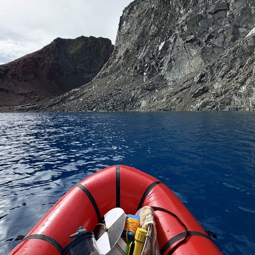

Mountain Lake Ecology
I study how introduced fish influence biodiversity, food webs, and ecosystem functioning in Sierra Nevada mountain lakes. Field surveys and ecological analyses help me understand how freshwater communities respond to environmental change.